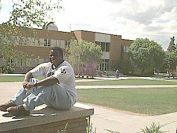

George S. Romney Building |
|
| The George S. Romney Building is home of the Division of Natural Science. Chemistry, physics, geology, mathematics and computer science are all taught in this building. One of the more popular attractions on campus, the Ricks College Planetarium, is also located in the Romney. |  |